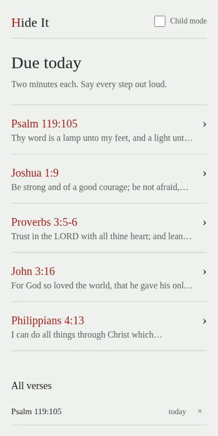
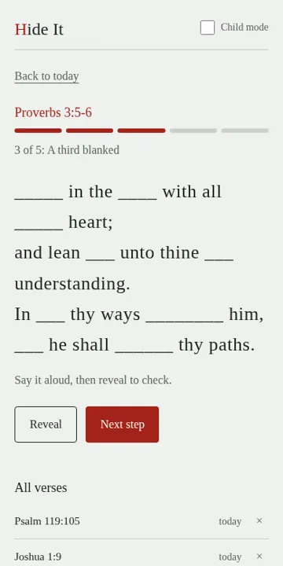

Hide It
A small app for learning Bible verses by heart, built for me and my boys. It fades the words out step by step, then schedules each verse for review.

What it is
Hide It helps you memorise a verse in five steps, hiding more of the words each time until you can say it from memory. Each verse then comes back for review just before you'd forget it.
Why I built it
I wanted something my boys and I could use together, with a simpler child mode, and no account or tracking.
Screenshots


How it's built
Vue and TypeScript as an installable web app that works offline. Reviews are scheduled with a spaced-repetition method. Everything is stored on the device.
Status and limits
It's a personal project. No sync between devices, and verses are entered by hand.